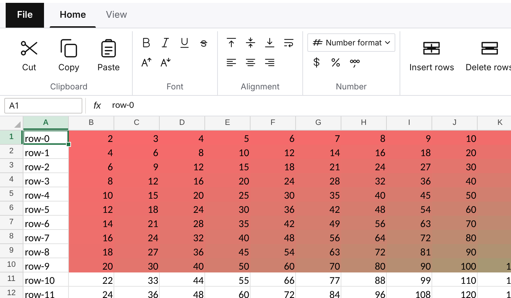
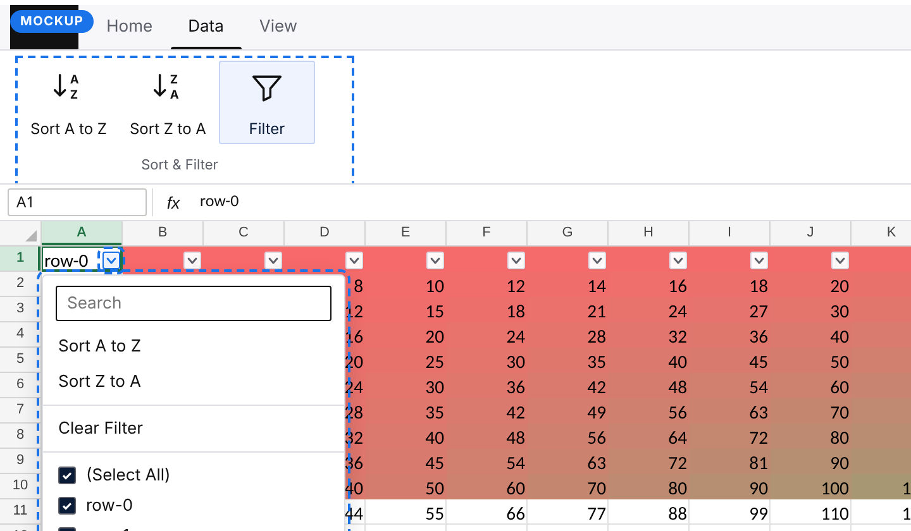
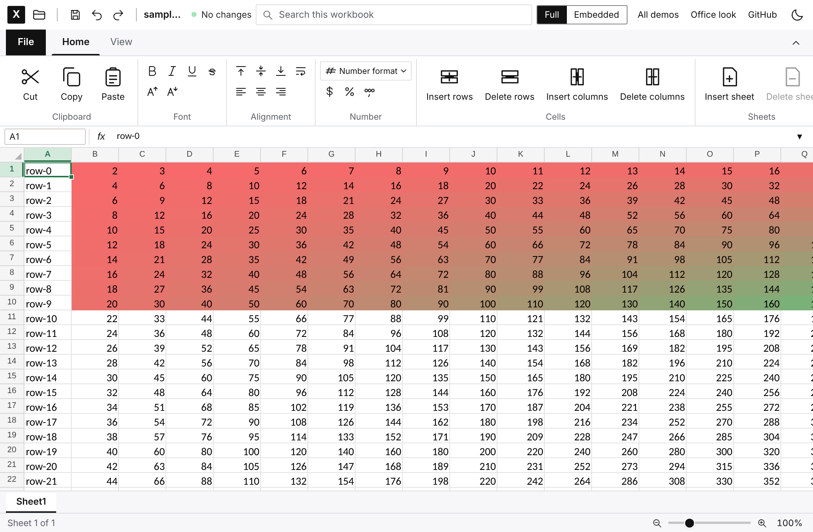
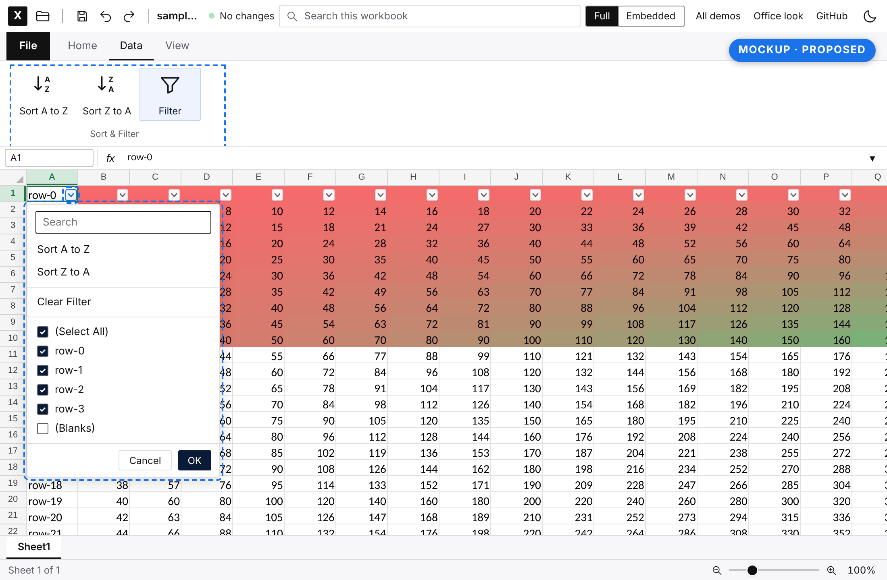

Sort and Filter a spreadsheet, with AutoFilter arrows on the header row
Approved 2026-11-20 (👍). Queued behind the host-API priority work.
Approve: tap 👍 on the issue · Decline: tap 👎
Close-up of the change




Full screen


Today: there is no Data tab and no Sort or Filter command; the first row has no AutoFilter arrows, so you can't hide or sort rows from the UI.


Mockup: Data > Sort & Filter (Sort A to Z, Sort Z to A, Filter). AutoFilter arrows sit on the first row; the open menu searches, sorts and checks values, as in Excel.
Tap an image to open it full size.
Why
Sorting a column and filtering a table are among the first things people do in a real spreadsheet, and Excel, Google Sheets, OnlyOffice and Collabora all put AutoFilter arrows on the header row. Nitro already keeps an autoFilter that arrives in a file and has SUBTOTAL / filtered-row helpers in the formula engine, but you can't turn Filter on, pick values, or Sort A to Z from the UI, and there is no Data tab. Wiring that up makes Nitro usable for everyday list work, and gives the already-approved right-click menu real Sort and Filter commands to call.
Definition of done
- A Data tab (and Home > Editing if it fits in the existing group without adding a ribbon row) offers Sort A to Z, Sort Z to A and Filter; Ctrl+Shift+L toggles AutoFilter on the current region.
- With Filter on, the first row of the region shows AutoFilter arrows; the menu has Search, Sort A to Z / Z to A, Select All, per-value checkboxes and Blanks; OK hides non-matching rows and is one undo step.
- Sort A to Z / Z to A rearranges the data rows of the current region and leaves the header row in place; the result saves as a valid autoFilter / sorted sheet that Excel and LibreOffice reopen without repair.
- Hidden rows stay hidden while the filter is on, and are skipped by copy of the visible region; clearing the filter or turning Filter off shows them again.
- Playwright tests cover toggle, one value filter, sort, undo and a save round-trip; bundle-budget and all required checks green. No first-load size limit is raised; new code stays in the lazy Excel chunk.
Approve: tap 👍 on the issue · Decline: tap 👎